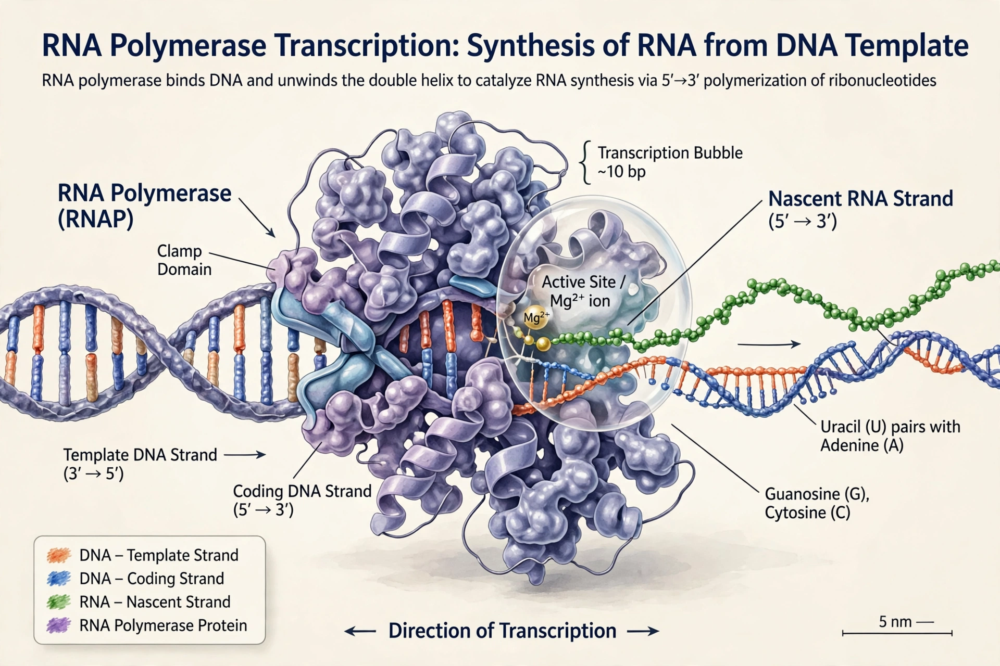

| RNA polymerase | |
 RNA polymerase transcribing a DNA template | |
| Function | Synthesis of RNA from a DNA template (transcription) |
|---|---|
| Direction | RNA synthesised 5′ → 3′; template read 3′ → 5′ |
| Types (eukaryotes) | Pol I (rRNA), Pol II (mRNA), Pol III (tRNA, 5S rRNA) |
| Discovery | 1960 (independent work of several groups) |
RNA polymerase (RNAP) is an enzyme that synthesises RNA from a DNA template, in the process called transcription — the first step of gene expression. RNA polymerase unwinds the DNA double helix, reads one strand in the 3′→5′ direction, and assembles a complementary RNA chain in the 5′→3′ direction, using ribonucleoside triphosphates and requiring no primer, unlike DNA polymerase.
Bacteria have a single RNA polymerase whose core enzyme (subunits α₂ββ′ω) combines with a sigma (σ) factor to form the holoenzyme that recognises promoters. Eukaryotic nuclei have three: Pol I transcribes most ribosomal RNA; Pol II transcribes messenger RNA and most regulatory RNAs, and is the focus of most gene regulation; Pol III transcribes transfer RNA and 5S rRNA. Plants have two additional polymerases (Pol IV and V) involved in gene silencing, and archaea have a single enzyme resembling Pol II.
Transcription proceeds in initiation (binding to a promoter and melting the DNA), elongation (processive synthesis at roughly 20–80 nucleotides per second, with backtracking and proofreading), and termination (in bacteria, via hairpin structures or the Rho factor; in eukaryotes, coupled to cleavage and polyadenylation of the transcript). Roger Kornberg received the 2006 Nobel Prize in Chemistry for detailed structural studies of the eukaryotic enzyme in action.
Because transcription is the primary control point for gene expression, RNA polymerase is the target of transcription factors, enhancers, and many drugs: the antibiotic rifampicin blocks bacterial RNAP and is a mainstay of tuberculosis treatment, while α-amanitin, the toxin of the death cap mushroom, potently inhibits Pol II.